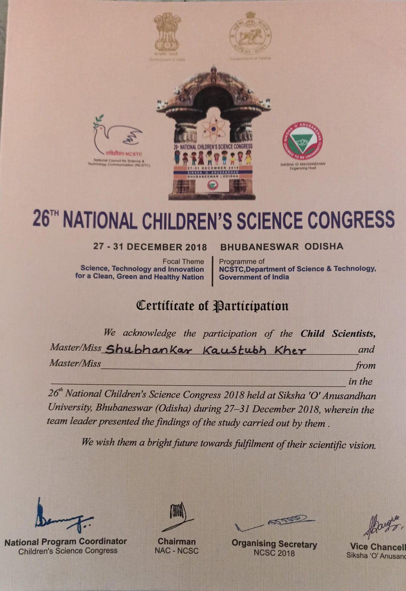

Porous Irrigation
This project focuses on a novel irrigation technique designed to provide efficient water distribution while minimizing waste. It utilizes porous pipes embedded within the soil, enabling slow, uniform watering.
Key Features
- Efficient use of water for agricultural purposes
- Reduces water wastage through precision delivery to plant roots
- Cost-effective and sustainable compared to traditional irrigation systems
- Easy to install and maintain with low energy consumption
- Improves crop yield while being environmentally friendly

System Diagram

Project Recognition